サウナ
5スポット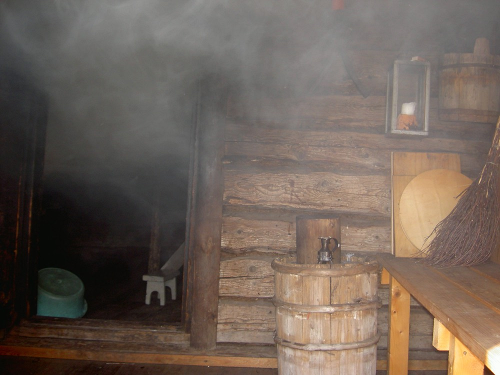
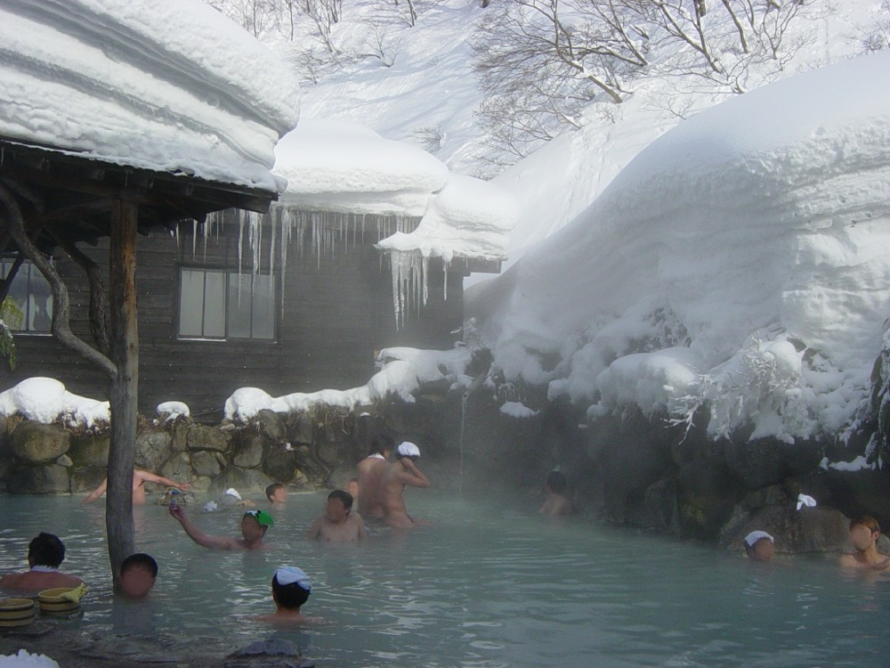
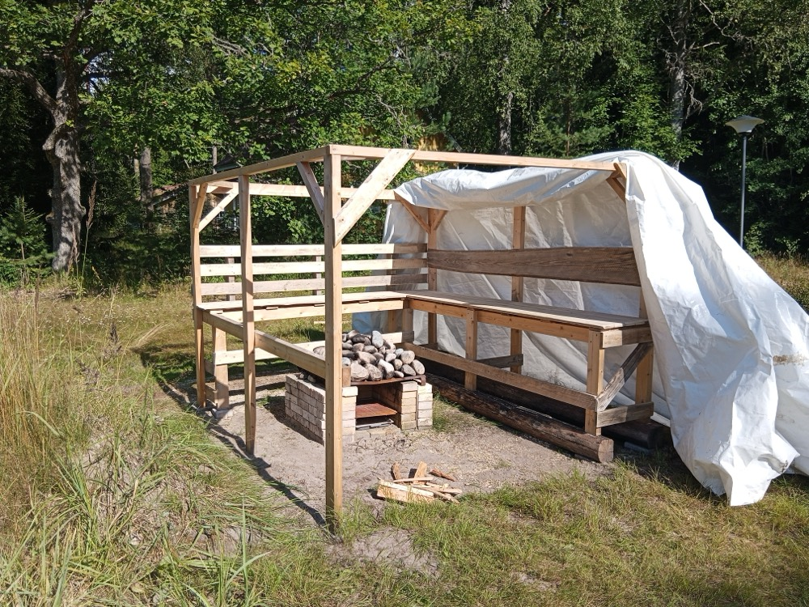
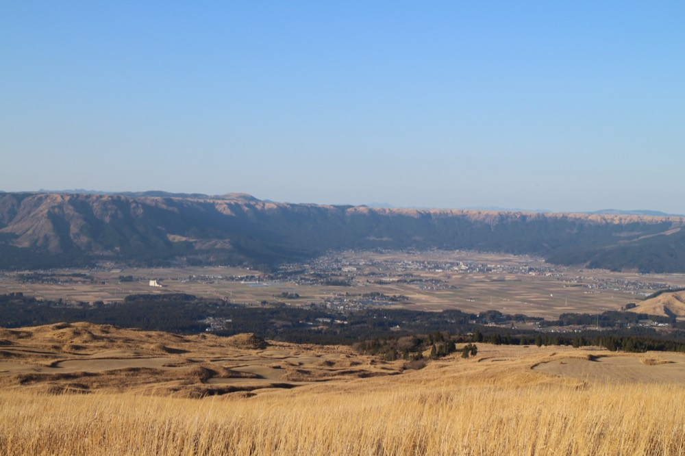
宿泊
割引はOTA経由の宿が対象見込み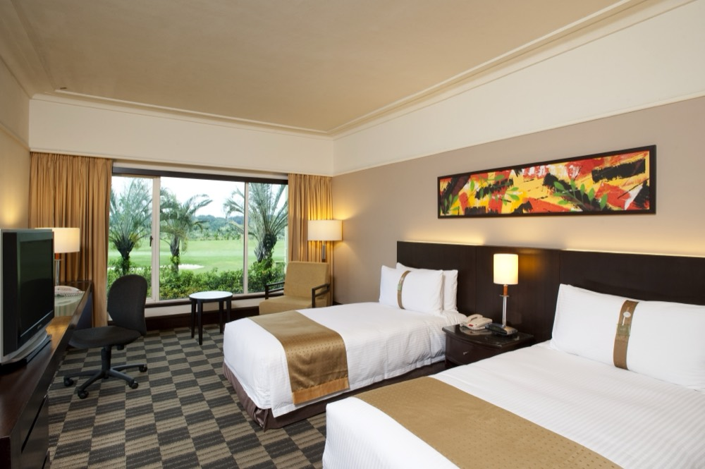
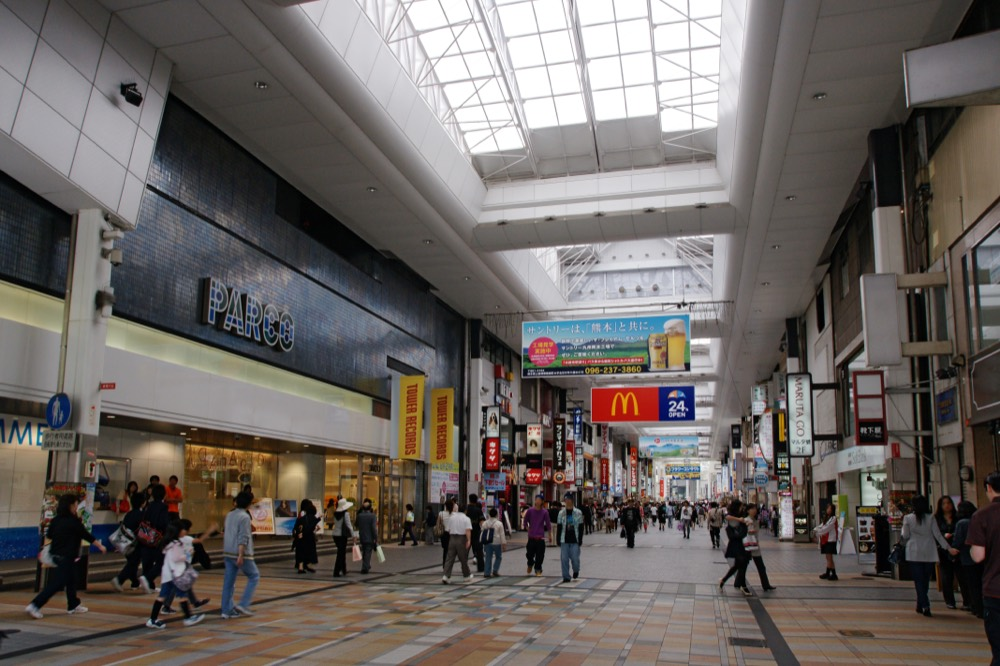
Airbnb・民泊は割引に使えるか
下通・上通アーケード周辺なら2人で1泊1万円を切る部屋も探せる。割引が使えるかは現時点では未確定だが、期待は持てる。
- 観光庁の発表原文は「九州地方における1泊以上の旅行・宿泊商品」とだけ書いてあり、旅館業法の許可施設に限るとは書いていない
- 前例の全国旅行支援では、住宅宿泊事業法（民泊新法）の届出住宅も対象に含まれていた。旅館業の許可を取っているゲストハウス・簡易宿所ならなおさら対象になり得る
- ただし宿側が事業に登録しないと使えないので、じゃらん・楽天トラベルにも載っている宿を選ぶのが確実。楽天のVacation STAY（民泊枠）は現在「応援割 発表待ち」表示
出典: 観光庁（確認日 2026-08-30）
観光
グルメと街歩き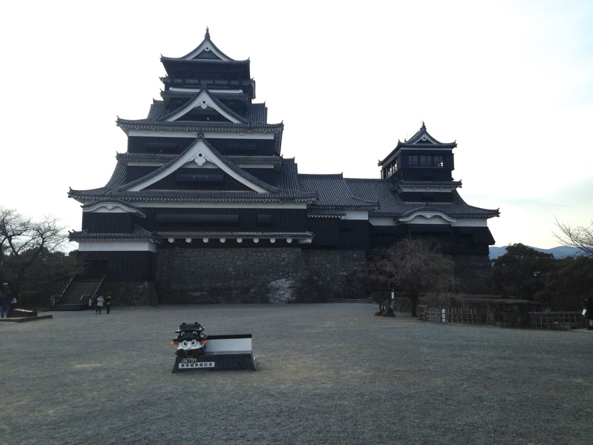
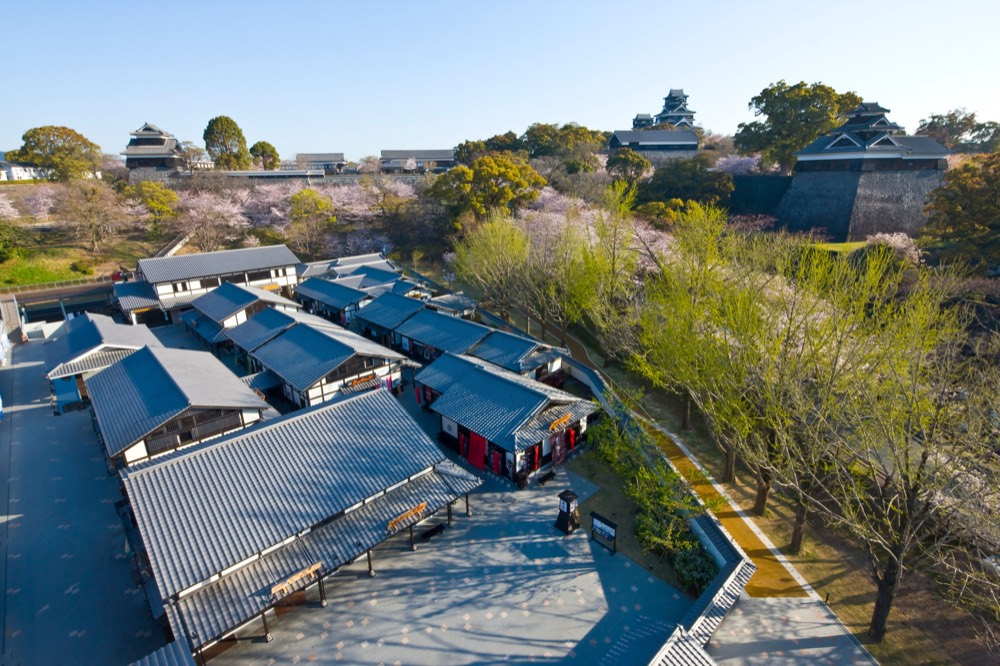
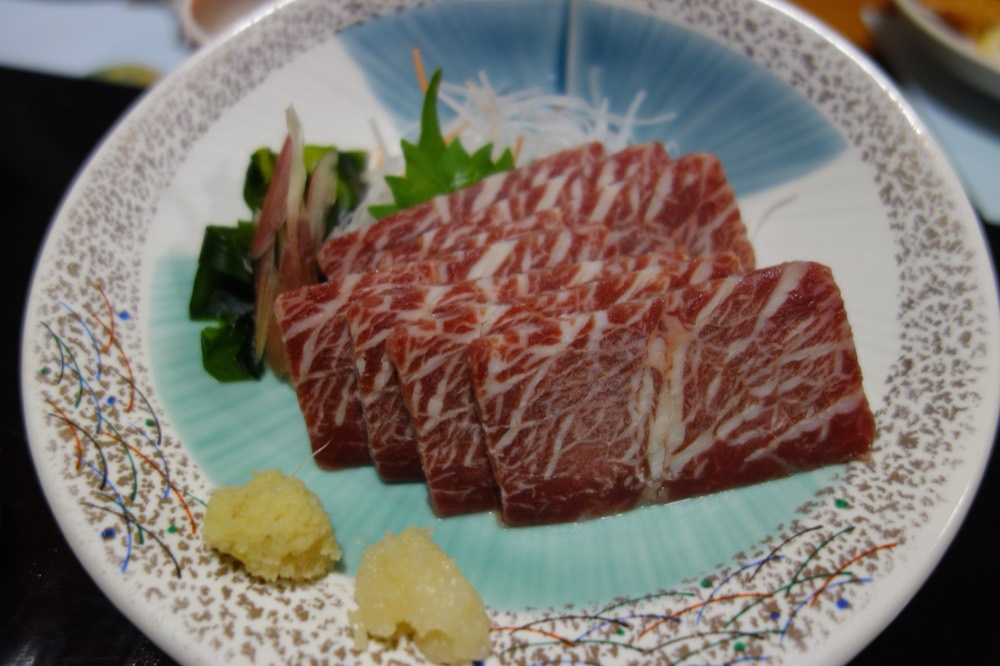
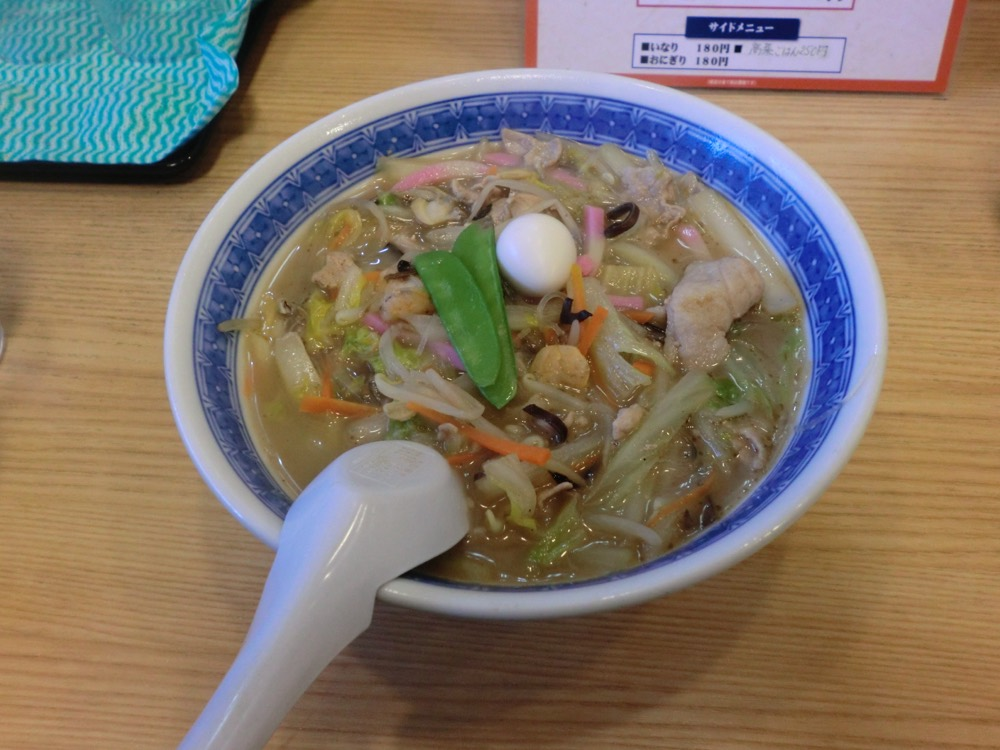
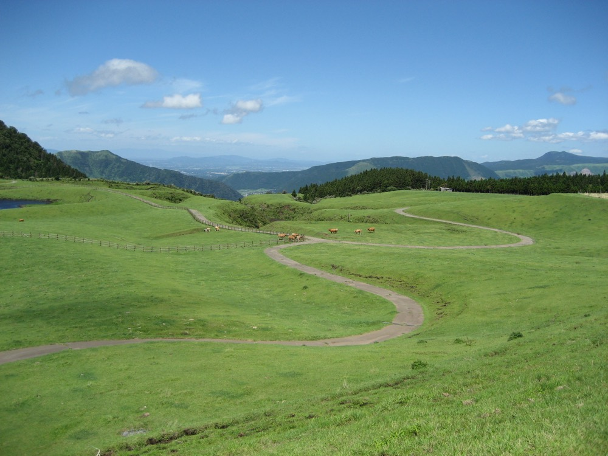
モデルプラン
5案・1人あたり概算弾丸ととのい
とにかく安く、湯らっくすだけ味わえればいい人向け。
2日目 朝ウナ → 黒亭で締め → 夜便で帰京
1泊なので割引の恩恵は小さめ。宿泊のみ割引（60%・上限2万円）が使えれば宿代は約1,900円まで下がり、総額2万円強になる。
王道サウナ旅
市内と阿蘇の両方。今回いちばんおすすめの型。
2日目 阿蘇へ → MIKI TAO SAUNA貸切 → 草千里 → どんどこ湯
3日目 城の湯で朝ウナ → 太平燕 → 帰京
宿泊2泊に60%割引が効けば宿代は2万円→8,000円。総額は約4万円まで下がる。
パックまるごと割引
手続きがいちばんラクで、割引額が最大になる型。羽田発着。
交通にも割引が効くのがこの型だけの利点。羽田発着で移動もラク。ただし販売開始は9月発表待ちで、先着枠を取れるかは運。
黒川温泉ふりきり
サウナ半分・温泉旅館半分。ちょっと贅沢したい回に。
2日目 黒川温泉へ（バス約3時間）→ 入湯手形で3湯 → 客室サウナのある旅館泊
3日目 朝風呂 → 熊本市内へ戻って帰京
宿代が高いぶん割引の効きが最大。2泊とも60%オフなら宿代32,000円→12,800円で、総額は約39,000円。高い宿ほど得をする制度なので、実はこの型がいちばん賢い。バス代はSUNQパス3日券8,000円に置き換えると市内の移動も乗り放題になる。
完全制覇
このページのサウナを全部踏む。連休を丸ごと使える時に。
2日目 阿蘇 → MIKI TAO貸切 → 草千里 → どんどこ湯 → 市内泊
3日目 黒川温泉 → 入湯手形 → 旅館泊
4日目 城の湯で朝ウナ → 太平燕・買い物 → 帰京
3泊すべてに60%割引（上限2万円/泊）が効けば宿代42,000円→16,800円。総額約59,000円。日数のわりに割安になる。阿蘇も黒川も行くこの型はSUNQパスがいちばん効く（交通11,000円→8,000円）。
試算の前提
- 1人あたり・2人で行く前提（MIKI TAOの貸切料金を折半）
- 航空券はジェットスターのセール価格（片道5,490円）を往復で計上。諸費用で数千円上振れすることがある
- 市内ホテル1泊1万円、黒川の旅館1泊2食22,000円は相場からの仮置き。実際の空室・料金は各予約サイトで要確認
- 割引後の金額は、ふっこう応援割が予定どおり10/1開始で対象宿を取れた場合の計算
いまやってるセール
確認日 2026-08-30ジェットスター スーパースターセール
成田→熊本が片道5,490円〜。搭乗期間は9/29〜2027/1/28なので10月の旅にドンピシャ。
出典: タビリス・在庫連動で早く終わることあり
セールの合わせ技
セール航空券を先に買うと交通は割引対象外になるが、代わりに宿泊だけふっこう割60%オフ（上限2万円/泊）を狙える。ジェットスター往復約11,000円＋割引後の宿なら、パック案より安くなる可能性がある。ただし宿の割引販売開始はまだ先なので、確実に取りたいならパック案が堅い。
現地の足を安くする
熊本はバスの国SUNQパス（バス乗り放題）
九州のバスがほぼ全線乗り放題になるフリーパス。北部九州＋下関 3日券8,000円（熊本を含む）、全九州3日券10,000円、全九州4日券14,000円。熊本〜黒川温泉も熊本〜阿蘇山上ターミナルも対象路線に入っている。
出典: SUNQパス公式（確認日 2026-08-30）・料金は購入方法で変わることがある
東京からの行き方くらべ
片道・10月目安| 手段 | 片道 | 時間 | ひとこと |
|---|---|---|---|
| ジェットスター 成田→熊本 | 5,490円〜 (セール) | 約2時間 | 単体最安。1日2往復 |
| ソラシドエア 羽田→熊本 | 要確認 | 約1時間50分 | 羽田発が楽。早割の販売形態が変更中 |
| JAL / ANA 羽田→熊本 | 14,000円〜 | 約1時間50分 | 単体では高いがパックの部品なら化ける |
| 新幹線 東京→熊本 | 28,660円 | 約6時間 | のぞみ+さくら乗継。今回は分が悪い |
| パック 本命 航空券+宿2泊 | 総額55,000円前後 | — | ここに60%割引が丸ごと効く（割引タブ） |
結論
いまはジェットスターがセール中なので、「セール航空券＋宿だけ割引」と「パックまるごと割引」の2択。前者は安いが9/2までに日程確定が必要、後者はラクで確実だが9月の販売開始待ち。急がないならパック、めしあぴと今週中に日程が決まるならセールを取る。
九州ふっこう応援割
2026-08-28 観光庁発表- 宿泊のみ: 上限 20,000円/泊
- 交通付き宿泊ツアー2泊以上: 上限 30,000円
- 対象は10月1日宿泊分から。居住地の制限なし
- 宿泊が必須。日帰り・交通単体には使えない
出典: 観光庁 ／ Travel Voice（確認日 2026-08-30）
作戦はこの3手
- めしあぴと10月の候補日を今決める（平日絡みだと宿も便も取りやすい）
- 9月の販売開始日の発表を見張る（じゃらん・楽天・JAL/ANAパック）
- 開始日に宿かパックを即予約 → MIKI TAOの貸切枠も同時に押さえる